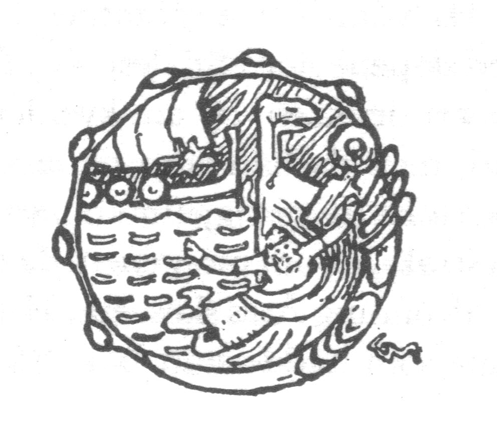
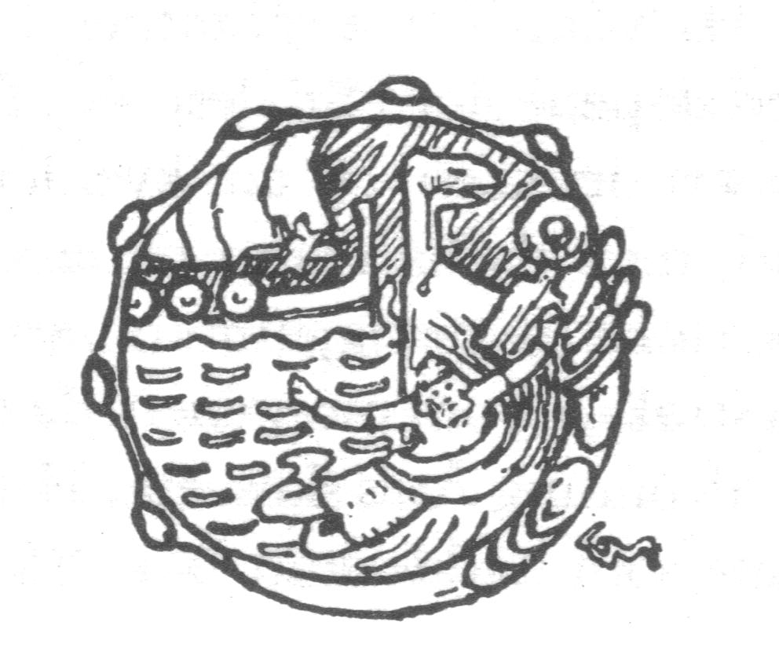

welcome 2 the leahzone
radical antisubstack aktion
Upon receipt of thy latest epistle I didst bellow to the heavens: "WAHOOOOO", and thereupon didst perform a triple backflip, miscalculating the landing and extinguishing my life. Thereafter I learned how to make a html website which I probably would have accomplished in school had I paid attention; here it is.* Probably this is best viewed on desktop but I'm not in charge a you. What format is this, the Dotcom-nostalgic revealed through the QR wormhole & transmitted by way of the postcard. And what a naked form a postcard is. Any time I get one I'm wondering what the nosy postie reckons, sly flatmates, overbearing wildlife. Hello to them. A person can only overhear something of interest. Do you know your postperson? I always thought mine was a deadbeat (where does this term come from) dad (of a fella what I went to school with (raised by his grandma)) but on reflection he was just absent every day from picking up or dropping off his baby boy because he was busy working. Stamp stamp across the planet. Circumvents the handwriting issue, write/right?** But websites too - and this is technically public - are nakeder, right, like I could've sent an email & CC'd the whole world, rumbling myself around in a million junkboxes. Let me then pompously ad[d]ress. There are things we live among 'and to see them is to slow ourselves'. The pencil has "a grip". I like to write an email from time to time because it feels like I'm bothering with something/one. These days I only look at htmls when I'm trying to find something very specific in the Gutenberg stuff (Moby dick; Stein), or hamlet MIT, whatever (the CTRL and F keys in harmony as dowsing rods)
 1986
1986Point being I'm all over it. Jump through the hoops, har har, here we are all the same. Some days I think about expressing how I feel (cringe+blocked) and I think back, recursively, to the word FUG as it appears in this (also private-public) communication on granta. There's something super unwieldy about it, like, whatareyouguystalkingabout, partly because I'm thinking about the westcountry-ese 'fug' as audial transcription of 'fuck', partly because the word doesn't even seem to exist in its own right, beyond Sophie's 'funk' (which sounds more fun). The """""conversation""""" is soooooo covid-era and I have very strong sensory memories of reading it while walking into sta from Dra in my first year. I feel a bit prickly about 'fug' probably because of that, imagining I'm not there any more (person, geographic, mental, interpersonal, ynameit). Is it cringe m'lord. So fug comes to mind when I'm about to go and express something as reflux (less latinate (more useful) mouthsick). I like both these writers but this flopping has stuck me deeper, and probably for the worse. Don't tell me it ironically works because it's inarticulate & redundant. This is all to preface or forestall my point that I am full of disappointments lately and all my lives feel horribly disrupted, doing my best to avoid the white boy crashout of tryna see if I can move to china. Basically every drug is rly boring. The first world and its problems (it's problems). I guess through my time watching Logistics and Tie Xie Qu, all the names of cities have dangled about my brain. Not that these are seductive representations. A heart-shaped vocabulary in Hohhot, in Shenyang. Why are coffee machines so expensive it's not like they're performing a particularly difficult function.
 1942
1942
I've been obsessed with the terms in which obsession is described lately, I keep reading sentences which start
with "I've been obsessed with..." Which all more or less turn out to mean 'the author has read a couple
wikipedias'. Obsession ≠ dedication, immersion; cultivated idiosyncrasies, fine-combed irregularity. Ho ho ho
(spake the jolly philanthropist). This evening I am managing bars and my parents are to eat something that calls
itself 87% british chicken. Le society methinks???? I go back and back and throw up about poetry because I'm not
in the mood hardly ever to read wank. I hate all the curlews-and-lakes pomposity about as much as I'm against
all these public school ass faces (plenty). The amount of award-winning poets I met who grew up in Dubai or have
an uncle writing for the observer, the lrb, I groan I gurgle. Look I know it's hardly news. Right now I've the
patience pretty much only for Sean Bonney and only in small doses and because he's dead in a really modern
way.***
You've encountered, he's that fella what did the fuck the police poem (which you can find in the lovely
Letters Against the Firmament and which I steal from). I have a pdf of his last book, Our Death,
if you want. He's propa Bri'ish but was one of them that moved to Berlin (under the cover of 'academic'
''work'') and I feel both and neither ways about this, Berlin as the trust-fundy thinking-themselves-bohemian
destination for the euroyuppie, or was, until covid and it seems to have been dethroned, for where I know not.
When I was in B a couple years ago I liked it in ways & was there on my own walking stomping but felt I held
it all at arms length. The flaneur (he/him) must wa(l/n)k off his century. I'm not calling Sean one of those.
He's the only radical poet the uk ever produced that I can think of right now (I'm not trying).**** Whose
radical
huh, your radical, my radical? The radicle ruticle cuticle? Hey wacky dawg say something funny. While ago I read a eulogy for SB by I think Fran
Lock (whom I like) which breathlessly described him as 'a European'. Of course I blehhhhhhhed about this wanky FBPE-y sentiment, the kind you can only really get in british 'politics'.***** Let us rub ourselves to the
thought of the west. West a territory entirely composed of last bastions, (I can walk) is that right am I alluding to the eastern front (which one). But this is all a recent development and entirely factual. 'And to
see them is to stroke ourselves'. Cow-boy dreams. How did I get here. I hope you are well. In light - in light
of recent events.
2021  2025
2025
Did you ever try to read Serbian with all your knowledge. I have been having goes the past few days & it do
make me giggle. I never really lost the bit of Russian I got in sta but it's rusted & oh god the grammar. So to
get a mishmash Cyrillic is just a treat. I've gotta end up Belgrade one of these days. The political is only
ever the useless right (right)? To confess something big: I get a line from ms Anne Boyer running around in my
head often enough. Closing her poem a woman shopping: how could it [this book] be literature if it is not
coyly against literature, but sincerely against it, as it is also against ourselves? It's almost glib,
but not quite, and troubling in the way climate change seems (to me, a white brit)(this is a total non-sequitur
and entirely personal). Cheaply, 'against' can be spatialised and horny & maybe there's a sidelong look at
that but I don't think Anne's fully interested in entertaining it, what's being said is more complicated and
challenging. Actually I believe in Anne more than I believe in just about anybody. These past few months I have
been absurdly asexual but I get to assign that to wage labour & having no free time outside work rather than
having to reflect & consider my own phantasie. It's not interesting but I feel like I'm saying things here.
That is to say I keep meeting people intensely and only figuring it out later. Which is to say I was down and
out behind venetians in a trench; in walks a dame with a smoking revolver. Gravity's hardly for us,
Hashimoto-San. A breeze will keep on going, angel's trash (hurricane), eyes emoji. Yeah chagall. There are
things we live among.
 1935
1935  1913
1913
Matisse and Chagall. Wagies
In nyc lately I made a short film entitled HE FORGETS THE SHARK which I find neato it's predictably ambient & I kept the shot lengths loooong, it's about dreams and feet and sharks. But I don't think it's going anywhere I was initially going to publish it or have it published but I got too pissed off (collective emotions, karmic imbalances) so it'll sit as an .mp4 for longer. Film rec corner did you ever see the Radu Jude film do not expect too much from the end of the world - that Romanian moment, he's (Jude) a personality I guess but I'm into it as ultra contemporary collapse, eastern european antinato outside the eu, border border war type cinema. Some cheap shots but overall worthwhile. The lead character (Angela)'s contenty parodies of Andrew Tate reminded me of dick cavett saying the n word in a funny voice and the film seems to recognise this by the end. I guess I know I've experienced decent commentary when it makes me want to throw up (there's a lot of vomit so far in this website and for that I apologise). Also I watched ADVENTURES OF A DENTIST, a 1967 film from elem klimov, the Belorussian chap, it inhabits the kind of mid-60s soviet quasi-comedy TYPE THING but I get lifted out of that with it, a miracle movie, believes in itself wholeheartedly (too rare). So it inhabits the genre-comedy, the quotidian, but surprises and elasticates itself around that. Also go watch IN SPRING / Навесні from 1929, a ukranian number, you can get it on youtube, mute it and throw on GROUPER SLEEP PLAYLIST or somesuch. I need you to tell me what you're up to after you get round to graduating, sorry. Nuyork I like plenty & it flung me up a crisis, went to a poetry reading bc of course (gender minestrone) & spoke to others, then others on other days, basically I need to drop myself in a city for a good long while since I don't got nothin nor nobody here, (against literature as against.. myself(?)) s'awful lonely. Logged off pretty hard but didn't solve all my issues, who'd a thunk? Every dang nice day I got to be at work and all the other days too gripe gripe gripe.
 2006 c.800
2006 c.800
Maybe I'm sensitive because there's none around here but public art in America is electric even when it's bad or in poor taste, that is, it does its job as public art, it's seen, it is (it's).****** Stared at the pigeon DINOSAUR on 10th ave and found it crass, obvious, insta-thirsty sculpture, but got to think nicely about how and why nonetheless. Awful sick of the first person pronoun by now. The britpsyche getting me down, it's scanning nasty & nastiness as inhabited modes, while the generous or outgoing are incidental & contingent on others going out they way to serve. Serve serve. Off'l depressing this site. I really understand very little about Australia, something about a country with a yawning abyss at its heart in a non-metaphorical sense, is unusual. But I write this at work in a village empty at the middle, the sea the sea (a port town a harbour visit). I have a feeling there's something in the nomadology chapter in a thousand plateaus that talks about ''the outback'' & the relationship with the sea (this is on the smooth vs striated discussion, can't remember if that's same chapter). Also Sarah Kennedy nice lady teaches at Cambridge is from aus & was explaining solastalgia to me one time, a theory born from that space, I think. Do you feel like living on the periphery is good for you (I'm yoking), do you feel at least there's a particular relationship to space that is specific to Australian moments or is it all lost in the whirlpool of yup, of flat white, of suburb. (Is it profoundly different to your experience in/of the us?). Not worth forgetting Gertrude's injunction to act so that there is no use in a centre. Spatial theory(ies) maybe a remnant a the 20th century, De Certeau, Lefebvre, Auge. Vermeulen has an article in Frieze which dredges them but I don't find him super successful.******* You remember. 'And to see them is to grow ourselves'. Sorry to bring up deleuze again I live in permanent denial & purely because everybody I've ever spoken to about D&G irl (at length) have been insufferable. At work politics goes as far as somebody saying I love AI it is so funny. Maybe that's the rest of the world. Get outta zenandrughs. Look I never made my peace with Goethe.
 2023
2023A fetish for no time but later (the imp(o/a)ssible future). Lettre a un prêt: je n'ai aucune expérience du priere. Caffé et croissant s'il vous plaît. Look forward to my debut trip-hop EP, The Philosophy of Rick and Morty. I read a book by Oxana Timofeeva SOLAR POLITICS which makes a case for the sun as a comrade, and I want to believe that in the seasonal murk, but it's hard for me to see beyond sun-worship in the fascistic sense (L'etat; le tat), the black sun. Munch's sun? I guess probably the Chinese sun people know. When I went to MOMA it kicked me in the head and said remember this matters dickhead & I said yes sir of course sir; the met was a bit of a letdown by comparison. Whichever curator at the Guggenheim had the idea of playing colonoscopy footage on a loop at the Orphist exhibition (endless Delaunays, largely tedious) is literally a genius and I want to kiss them. Lately I been bumpin Silver Jews - WE COULD BE LOOKING FOR THE SAME THING (white boy mode); Terre Thaemlitz's MIDTOWN 120 BLUES if you can find it anywhere (i have a link if y want); Sophia Bel (NO MORE)(not the remix); adored Lael Neale for a while now; anything by Rachel Grimes; John Roseboro I tend to say damn this is so good what's the catch; +1 to Yara Asmar, whom I want to score film after film; check this shit out; every time I hear Reggie Pearl - Ode to Neptune I say oh yeah this is pretty much how music could be. One a these days you could follow me back on spotify (bitch); one a these days I will spend some time getting into the Duchamp spirit but not today. Francis Picabia made me crazy in the goog this is my picture, literally a painting that is a poem.
Have attempted to add images to this site to illustrate certain points and make others on their own but they may not load, my html skills are so fresh and baby bunny. They would've been 1. A man testing the (non-functional) Tsar Bell, but primarily modelling, or emoting. He's stimming, soooo aware of himself before the camera, or maybe it's the photographer's fault; 2. The 1942 photograph of Wanbu Huayanjing pagoda in Hohhot; 3. A t-shirt which reads 'I am NICE and also RICH' worn by a child playing football in the Georgian film WHAT DO WE SEE WHEN WE LOOK AT THE SKY (2021); 4. A small girl's interpretation of my cocktail menu; 5. Matisse's sketch of Polyphemus, pure eroticism, look at his right hand, I like to imagine it has a relationship with 6. Chagall's seven-fingered self-portrait; 7. A school of squat lobsters, all fleshy and handy, get real close to this one; 8. King Eystein washed overboard; 9. A google maps screenshot of 'inaccessible island', by Edinburgh of the seven seas, which I noticed one time; 10. My seeing of Picabia's Culture physique; 11. A man sweeping the factory floor in Tie Xie Qun but somehow the floor is gloopy and stalagmitic; 12. A carillonneur, best viewed on desktop
 1998
1998Wat Tyler, Robert Kett, Jenny Geddes, Michael An Gof. Each over hedgerows. Types that tear me up (how the sun exploded over them). On 'inevitability' as a force, a wet feather. Sean's Firmament. Do you dream much lately (I still don't). I don't want it medical. This is thin, pictures should speak between. Do you roll your eyes at "the tyranny of lived experience"
My congrats if so, oh ho, I'll set you here for now, much love as always
*
I remember 'learning' scratch and the teacher playing clash of clans. Funnily enough the one detention of my schooling career in IT due to a similar crime (only i was playing some game on the computer whereas he was on his phone). Mostly I think it was a class about resizing pictures in word docs
**
On handwriting, I can't discern whether you've written 'Australia has no laws' or 'Australia has no jews'. Derrida would have a fit. What does it mean to be overeducated.
***
For transparency, I also been tinkering with Simone White & Fred Moten Fred Moten Fred Moten
****
A Baraka guy among other things. That's his neighbourhood
*****
Not that it was necessarily meant like this, I'd trust Fran to be better; I need you to read that blehhhhh as me re-enacting the family guy vomit scene
******
When I say there's no public art around here, it's likely of the flotsam n kitsch curlews and lakes disease that all Celtic expression seems to exist under. Get a grip
*******
Jacky D again on 'DREDGING', punnin bastard re: Mare/mar/mor/Maria